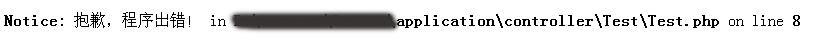
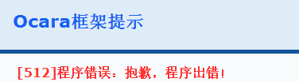
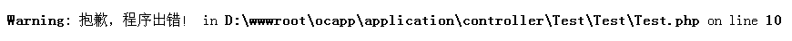
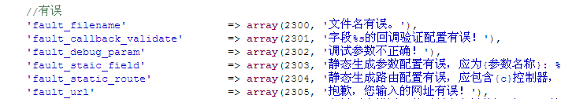
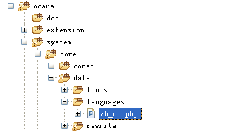

异常错误处理
框架对代码中出现的错误和有意抛出的异常，都进行了自定义处理。
一、区分程序错误和异常错误
程序错误与异常错误是不同的，主要区别介绍如下：
1、程序错误
主要是指PHP所抛出的错误。
（1）触发方式
主要有以下两种触发方式：
（a）PHP代码错误
在PHP中，主要有以下3种错误类型。请查看PHP手册的错误处理。
（a1） 注意（Notices）
是一些比较小而且不严重的错误，通常这类的错误是不提示的，但有时会影响到运行的结果。比如去访问一个未被定义的变量。
（a2）警告（Warnings）
是一些稍微严重的错误，PHP也会输出错误，但不会导致程序终止运行。比如想要包含include()一个本身不存在的文件。
（a3）致命错误（Fatal errors）
是一些严重的错误，会导致程序停止运行，PHP也会输出错误。比如你想要初始化一个根本不存在的类对象，或调用一个不存在的函数。
（b）自定义程序错误
主要是通过PHP的trigger_error(error_message[, error_types])函数有意抛出的如上所述的三种PHP代码错误，参见PHP手册。
（2）错误处理方式
（a）自定义错误处理
使用PHP的set_error_handler()函数指定自定义的函数进行处理。
但是，该函数无法处理以下错误类型：E_ERROR、 E_PARSE、 E_CORE_ERROR、 E_CORE_WARNING、
E_COMPILE_ERROR、 E_COMPILE_WARNING，和在 调用 set_error_handler() 函数所在文件中产生的大多数 E_STRICT。
（b）PHP自动处理
如果没有使用上述函数指定处理，则会按照PHP的处理方式处理。其中致命错误会停止执行代码。三种错误是否显示，取决于PHP
和代码里面的相应设置。
2、异常错误
其实是开发者有意抛出的错误，一般用于业务逻辑的错误提示。
所以异常错误的触发方式是throw new Exception()，抛出后不再执行代码。
目前框架已经自定义了\Ocara\Core\Exception类，它已经继承了Exception。
throw new Exception($message[, $code, Exception $previous])
对它抛出的异常错误，处理方式有以下三种：
（a）捕获处理方式
外层可以使用了try（检测）和catch（捕获）的语句结构捕获异常进行处理。
（b）自定义处理方式
通过set_exception_handler() 指定了异常处理的类或函数，会调用该类或函数进行处理。
（c）PHP自动处理
如果上述方式都没有，则PHP自行抛出"Fatal error: Uncaught exception 'Exception' with messag ... ..."的错误。
二、如何自己抛出错误？
1、抛出程序错误
（1）使用PHP的trigger_error()函数
如下实例：
class IndexAction extends TestController
{
/**
* 初始化函数
*/
public function _action()
{
trigger_error('抱歉，程序出错！');
}
}
页面输出如下（非E_USER_ERROR错误不会显示并终止程序运行）：

（2）使用Ocara\Core\Error的trigger(error[, params, errorType])函数
默认的错误类型是E_USER_ERROR。
如上例改成：
class IndexAction extends TestController
{
/**
* 初始化函数
*/
public function _action()
{
Error::trigger('抱歉，程序出错！');
}
}
这样，页面输出如下（E_USER_ERROR错误会显示并终止程序运行）：
2、抛出异常错误
有三种，一般请采用第三种框架提供的，因为它已经封装了错误语言、键名和错误码，如下：
（a）使用PHP的throw new Exception()
（b）使用throw new Ocara\Core\Exception()
（c）使用Ocara\Core\Error的show()
实例请看下面第四大点。
三、如何处理错误？
默认情况下，抛出错误时PHP会报错，但是用户体验不好。因此我们要自定义错误处理方式。
对于上述的两种错误，我们可以做以下的自定义处理：
1、框架默认处理方式
（1）输出打印错误
框架有自己的错误显示页面。如果不满足需求，可以通过事件指定输出页面。
假设要使用myerror类的output方法来显示错误，要在develop.php配置文件中修改配置如下：
/*
* 错误输出事件
*/
'error' => array(
'output' => array('myerror', 'output'), // 输出错误日志
'write_log' => '', // 记录错误日志
),
（2）设置哪些错误类型要输出
异常抛出的错误都会输出错误。
但是程序错误需要配置develop.php文件中ERROR_HANDLER的except_error_list选项排除一些不想让框架输出的错误，而使用PHP原生的方法输出。
实例如下，
如果使用trigger_error()抛出错误：
header("Content-type: text/html; charset=utf-8");
trigger_error('抱歉，程序出错！', array(), E_USER_WARNING);
则页面会输出错误并且停止代码执行：

假设要取消显示E_USER_WARNING错误，则如下配置：
/*
* 自定义错误处理
*/
'ERROR_HANDLER' => array(
'except_error_list' => array(
E_USER_WARNING
),
)
此时，错误会交由PHP默认方式处理（不停止代码执行），如下截图：

2、记录错误日志
虽然可以输出错误，但是记录错误日志也是必须的，非常有利于排错。
记录日志要用自定义回调函数、方法或路由。
（1）设置日志保存方式
设置日志的保存方式，要用到自定义回调。具体的回调配置是config/callback.php中的$CONF['CALLBACK']['error_log']。
假设我们要回调ExceptionHandler类的writeLog()方法来处理日志，该方法代码定义如下：
class ExceptionHandler extends Base
{
function writeLog($errorInfo)
{
$path = ocPath('data', 'logs/logTest.txt');
ocWrite($path, $errorInfo['errorMessage']);
}
}
然后，在conf/develop.php中配置自定义回调，如下所示：
$CONF['CALLBACK']['error_log'] = 'ExceptionHandler::writeLog';
（2）触发错误日志
配置完自定义回调以后，触发错误日志的方法说明如下：
（a）对于程序错误，只要配置了自定义回调，无论是哪种错误都会调用它写日志。
（b）对于异常错误，一样的处理方法。抛出错误时，有两种方法：
（b1）记录日志并且显示错误，使用Error::show(message[, params])方法。一般会终止程序执行。
（b2）只记录日志不显示错误，使用Error::writeLog(message[, params])方法。如果没有配置自定义回调，那它什么都不做。
记录异常错误日志实例如下：
假设缺少商品信息时只记录到日志而不显示出错信息，如下所示：
$itemInfo = $this->getItemInfo();
if (empty($itemInfo)) {
Error::writeLog('no_item_info'); // 仅记录错误日志
}
如果还想显示错误信息则使用Error::show()，如下所示：
$itemInfo = $this->getItemInfo();
if (empty($itemInfo)) {
Error::show('no_item_info'); //记录错误日志并显示错误
}
四、错误提示的语言配置
错误提示的语言配置，一般是在resource/lang及其子目录control或者model中。
通常有两种配置格式：
（1）错误数组
一般用于错误提示，是由错误码和错误文本组成的数组。比如：array(1201, 'Session路径设置出错。请检测权限或路径!')。
截取一部分代码，如下所示：

该错误配置，是在框架的中文简体版语言文件zh_cn.php，其路径如下图：

（2）字符串
一般只是作为语言文本，当然也可以作为错误提示，只是缺少错误码。比如：'Session路径设置出错。请检测权限或路径!'。
作为正常语言文本时，要用ocLang()函数获取该文本的语言配置。
实例如下，
假设我们在语言目录根文件resource/lang/base.php中做的语言配置，代码如下：
/**
/**
* Ocara base language config
* See ocara/system/data/languages/zh_cn.php
*/
$LANG = array(
'my_application_error' => '我的Web应用错误'
);
使用时，代码如下：
class IndexAction extends TestController
{
/**
* 初始化函数
*/
public function _action()
{
Error::show('my_application_error');
}
}
输出结果，如下截图：
实例如下：
以框架的语言配置文件为例。
（1）错误提示
下面是通过Error::show()抛出并显示错误。
class IndexAction extends TestController
{
/**
* 初始化函数
*/
public function _action()
{
Error::show('fault_filename');
}
}
如上实例代码中，"fault_filename"其实是Ocara框架本身的错误提示语言配置。
根据它的错误码和错误文本，如果没有配置自定义回调或自定义处理函数的话，会输出如下：
（2）正常文本
实际上，字符串格式的语言配置，一般用于正常文本比较多，而非错误提示。此时，要用ocLang()函数获取语言配置。
以上例说明，如果只取该语言配置文本，代码如下：
class IndexAction extends TestController
{
/**
* 初始化函数
*/
public function _action()
{
$errorContent = ocLang('my_application_error');
echo $errorContent; //输出“我的Web应用错误”
}
}